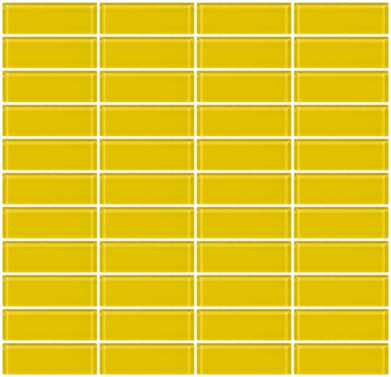

Lynae was adopted by a couple who were unable to have children of their own. She can change organic material into something else (e.g.: tools, weapons) and create semi-living constructs.

Tegan grew up having a strict but privileged family and an over-controlling mother. Due to that, Tegan is polite, obedient, and smart, but also sheltered and ignorant. Initially Tegan was unaware of her powers, but she later learned that she can clone herself.

Marigold was raised by criminals who thought that she could become their legacy. From her guardians, Marigold learned to lie, hide, rob, and steal. She also learned to be independent, pitiless, and always skeptical. Marigold’s power is telekinesis, which means that she can control inanimate objects at will.